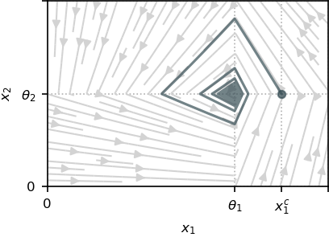

Damped genetic oscillator
The simplest GRN exhibiting oscillatory behaviors can be modeled through two variables $x_1$ and $x_2$ with opposite mutual effects: $x_1$ catalyzes the production of $x_2$, that in turn inhibits the production of $x_1$. We suppose that the system can be externally controlled by a chemical inducer that targets only one of the genes. The model is defined as
\[\left\{ \begin{array}{l} \dot{x}_1 = -\gamma_1 x_1 + u(t) k_1 s^{-}(x_2,\theta_2) , \\ \dot{x}_2 = -\gamma_2 x_2 + k_2 s^{+}(x_1,\theta_1). \end{array}\right.\]
where a detail of each term can be found in Introduction.
For any initial condition, the openloop system (i.e, $u \equiv 1$) converges to the equilibrium point $(\theta_1, \theta_2)$ when $t \rightarrow \infty$, producing a damped oscillatory behavior[1]:

The control objective is to induce a sustained oscillation. Thus, we can state the problem of producing a single cycle, which can be written through the initial and terminal constraints:
\[ x(0) = x(t_f) = (x_1^c, \theta_2 )\]
for free final time $t_f > 0$ and for $x_1^c > \theta_1$.
Problem definition
using Plots
using Plots.PlotMeasures
using OptimalControl
using NLPModelsIpoptWe define the regularization functions, where the method is decided through the argument regMethod.
# Regularization of the PWL dynamics
function s⁺(x, θ, regMethod)
if regMethod == 1 # Hill
out = x^k/(x^k + θ^k)
elseif regMethod == 2 # Exponential
out = 1 - 1/(1 + exp(k*(x-θ)))
end
return out
end
# Regularization of |u(t) - 1|
function abs_m1(u, regMethod)
if regMethod == 1 # Hill
out = (u^k - 1)/(u^k + 1)
elseif regMethod == 2 # Exponential
out = 1 - 2/(1 + exp(k*(u-1)))
end
return out*(u - 1)
endDefinition of the OCP:
# Constant definition
k₁ = 2;
k₂ = 3 # Production rates
γ₁ = 0.2;
γ₂ = 0.3 # Degradation rates
θ₁ = 4;
θ₂ = 3 # Transcriptional thresholds
uₘᵢₙ = 0.6;
uₘₐₓ = 1.4 # Control bounds
x₁ᶜ = 4.7 # Cycle point (initial and final)
λ = 0.5 # Trade-off fuel/time
# Initial guest for the NLP
tf = 1
u(t) = 1
sol = (control=u, variable=tf)
# Optimal control problem definition
ocp = @def begin
tf ∈ R, variable
t ∈ [0, tf], time
x = (x₁, x₂) ∈ R², state
u ∈ R, control
x₁(0) == x₁ᶜ
x₂(0) == θ₂
x₁(tf) == x₁ᶜ
x₂(tf) == θ₂
uₘᵢₙ ≤ u(t) ≤ uₘₐₓ
tf ≥ 1 # Force the state out of the comfort zone
ẋ(t) == [
- γ₁*x₁(t) + k₁*u(t)*(1 - s⁺(x₂(t), θ₂, regMethod)),
- γ₂*x₂(t) + k₂*s⁺(x₁(t), θ₁, regMethod),
]
∫(λ*abs_m1(u(t), regMethod) + 1-λ) → min
endResolution through Hill regularization
In order to ensure convergence of the solver, we solve the OCP by iteratively increasing the parameter $k$ while using the $i-1$-th solution as the initialization of the $i$-th iteration.
regMethod = 1 # Hill regularization
ki = 10 # Value of k for the first iteration
N = 400
maxki = 30 # Value of k for the last iteration
while ki < maxki
global ki += 10 # Iteration step
local print_level = (ki == maxki) # Only print the output on the last iteration
global k = ki
global sol = solve(ocp; grid_size=N, init=sol, print_level=4*print_level)
end▫ This is OptimalControl version v1.1.6 running with: direct, adnlp, ipopt.
▫ The optimal control problem is solved with CTDirect version v0.17.4.
┌─ The NLP is modelled with ADNLPModels and solved with NLPModelsIpopt.
│
├─ Number of time steps⋅: 400
└─ Discretisation scheme: midpoint
▫ This is OptimalControl version v1.1.6 running with: direct, adnlp, ipopt.
▫ The optimal control problem is solved with CTDirect version v0.17.4.
┌─ The NLP is modelled with ADNLPModels and solved with NLPModelsIpopt.
│
├─ Number of time steps⋅: 400
└─ Discretisation scheme: midpoint
Total number of variables............................: 1203
variables with only lower bounds: 1
variables with lower and upper bounds: 400
variables with only upper bounds: 0
Total number of equality constraints.................: 804
Total number of inequality constraints...............: 0
inequality constraints with only lower bounds: 0
inequality constraints with lower and upper bounds: 0
inequality constraints with only upper bounds: 0
Number of Iterations....: 36
(scaled) (unscaled)
Objective...............: 2.2759212438791407e+00 2.2759212438791407e+00
Dual infeasibility......: 3.1330953705903460e-12 3.1330953705903460e-12
Constraint violation....: 1.3322676295501878e-15 1.3322676295501878e-15
Variable bound violation: 1.3729003045526156e-08 1.3729003045526156e-08
Complementarity.........: 1.0000319548941249e-11 1.0000319548941249e-11
Overall NLP error.......: 1.0000319548941249e-11 1.0000319548941249e-11
Number of objective function evaluations = 45
Number of objective gradient evaluations = 37
Number of equality constraint evaluations = 45
Number of inequality constraint evaluations = 0
Number of equality constraint Jacobian evaluations = 37
Number of inequality constraint Jacobian evaluations = 0
Number of Lagrangian Hessian evaluations = 36
Total seconds in IPOPT = 0.479
EXIT: Optimal Solution Found.Plotting of the results:
plt1 = plot()
plt2 = plot()
tf = variable(sol)
tspan = range(0, tf, N) # time interval
x₁(t) = state(sol)(t)[1]
x₂(t) = state(sol)(t)[2]
u(t) = control(sol)(t)
xticks = ([0, θ₁, x₁ᶜ], ["0", "θ₁", "x₁ᶜ"])
yticks = ([0, θ₂], ["0", "θ₂"])
plot!(
plt1,
x₁.(tspan),
x₂.(tspan);
label="optimal trajectory",
xlabel="x₁",
ylabel="x₂",
xlimits=(θ₁/1.5, 1.1*x₁ᶜ),
ylimits=(θ₂/2, 1.75*θ₂),
)
xticks!(xticks)
yticks!(yticks)
plot!(plt2, tspan, u; label="optimal control", xlabel="t")
plot(plt1, plt2; layout=(1, 2), size=(800, 300))Resolution through exponential regularization
The same procedure for iteratively increasing $k$ is used.
regMethod = 2 # Exponential regularization
ki = 100 # Value of k for the first iteration
N = 400
maxki = 400 # Value of k for the last iteration
while ki < maxki
global ki += 100 # Iteration step
local print_level = (ki == maxki) # Only print the output on the last iteration
global k = ki
global sol = solve(ocp; grid_size=N, init=sol, print_level=4*print_level)
end▫ This is OptimalControl version v1.1.6 running with: direct, adnlp, ipopt.
▫ The optimal control problem is solved with CTDirect version v0.17.4.
┌─ The NLP is modelled with ADNLPModels and solved with NLPModelsIpopt.
│
├─ Number of time steps⋅: 400
└─ Discretisation scheme: midpoint
▫ This is OptimalControl version v1.1.6 running with: direct, adnlp, ipopt.
▫ The optimal control problem is solved with CTDirect version v0.17.4.
┌─ The NLP is modelled with ADNLPModels and solved with NLPModelsIpopt.
│
├─ Number of time steps⋅: 400
└─ Discretisation scheme: midpoint
▫ This is OptimalControl version v1.1.6 running with: direct, adnlp, ipopt.
▫ The optimal control problem is solved with CTDirect version v0.17.4.
┌─ The NLP is modelled with ADNLPModels and solved with NLPModelsIpopt.
│
├─ Number of time steps⋅: 400
└─ Discretisation scheme: midpoint
Total number of variables............................: 1203
variables with only lower bounds: 1
variables with lower and upper bounds: 400
variables with only upper bounds: 0
Total number of equality constraints.................: 804
Total number of inequality constraints...............: 0
inequality constraints with only lower bounds: 0
inequality constraints with lower and upper bounds: 0
inequality constraints with only upper bounds: 0
Number of Iterations....: 120
(scaled) (unscaled)
Objective...............: 1.9550852455303256e+00 1.9550852455303256e+00
Dual infeasibility......: 3.9321691308594684e-10 3.9321691308594684e-10
Constraint violation....: 1.7763568394002505e-15 1.7763568394002505e-15
Variable bound violation: 1.3698383094506994e-08 1.3698383094506994e-08
Complementarity.........: 1.0000003482178216e-11 1.0000003482178216e-11
Overall NLP error.......: 3.9321691308594684e-10 3.9321691308594684e-10
Number of objective function evaluations = 124
Number of objective gradient evaluations = 121
Number of equality constraint evaluations = 124
Number of inequality constraint evaluations = 0
Number of equality constraint Jacobian evaluations = 121
Number of inequality constraint Jacobian evaluations = 0
Number of Lagrangian Hessian evaluations = 120
Total seconds in IPOPT = 1.884
EXIT: Optimal Solution Found.Plotting of the results:
plt1 = plot()
plt2 = plot()
tf = variable(sol)
tspan = range(0, tf, N) # time interval
x₁(t) = state(sol)(t)[1]
x₂(t) = state(sol)(t)[2]
u(t) = control(sol)(t)
xticks = ([0, θ₁, x₁ᶜ], ["0", "θ₁", "x₁ᶜ"])
yticks = ([0, θ₂], ["0", "θ₂"])
plot!(
plt1,
x₁.(tspan),
x₂.(tspan);
label="optimal trajectory",
xlabel="x₁",
ylabel="x₂",
xlimits=(θ₁/1.5, 1.1*x₁ᶜ),
ylimits=(θ₂/2, 1.75*θ₂),
)
xticks!(xticks)
yticks!(yticks)
plot!(plt2, tspan, u; label="optimal control", xlabel="t")
plot(plt1, plt2; layout=(1, 2), size=(800, 300))
This page was generated using Literate.jl.
- 1E. Farcot, J.-L. Gouzé, Periodic solutions of piecewise affine gene network models with non uniform decay rates: the case of a negative feedback loop, Acta biotheoretica 57 (4) (2009) 429–455. –>